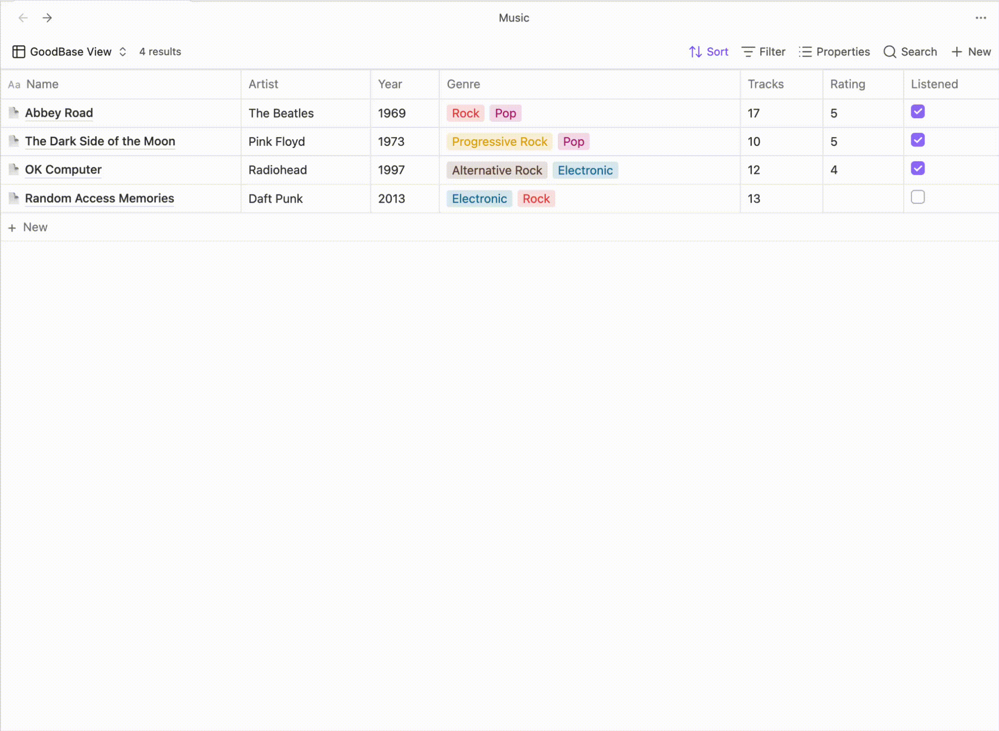
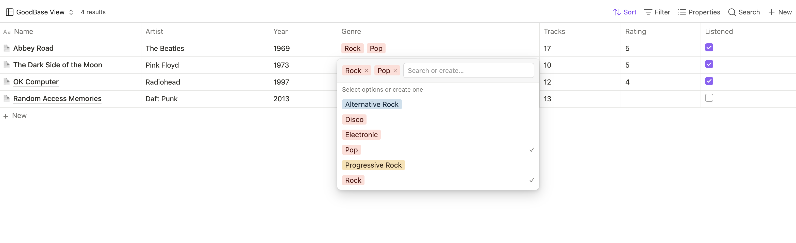
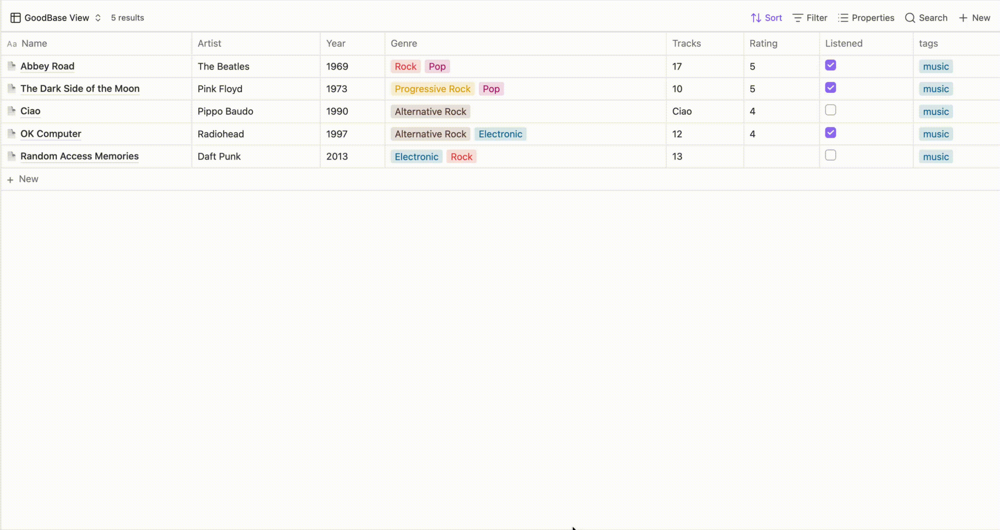
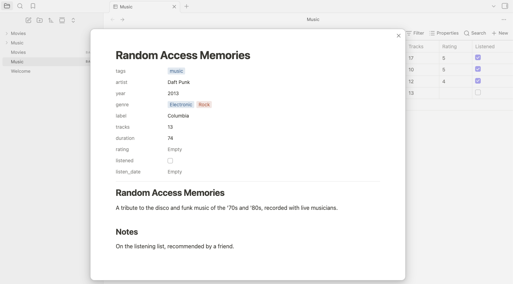
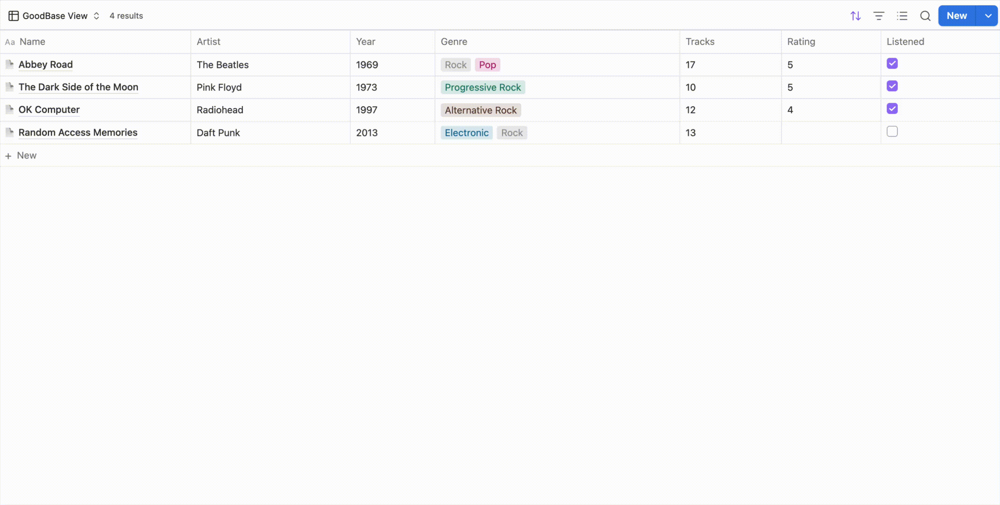
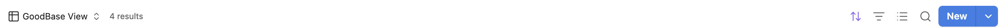

Notion-style tables
for Obsidian Bases
GoodBases is a free, open-source plugin that renders your Obsidian Bases as Notion-style databases — clean chrome, colored pills, hover actions, and inline editing. Your notes stay yours; only the look changes.

Features
Notion-fidelity chrome
System font stack, hairline borders, row hover wash, and a horizontal scroll container so columns never crush — even in embeds and reading mode.
Colored value pills
Tags and list properties render with Notion's 9-color palette. A deterministic hash keeps each value's color stable forever — or recolor any value yourself with the built-in color picker: Notion's palette, or any custom color you pick.
Inline cell editing
Click a cell to edit text and numbers in a floating input; checkboxes toggle in place. Pill cells open a select menu with every known value, search, and create-on-Enter.
Notion-style page panel
+ New opens the note centered in a panel, like Notion's page peek: editable title, editable properties, and the body rendered as formatted Markdown — click to edit the source.
Hover-reveal OPEN button
Hover a row to reveal an OPEN button that jumps to the note — in a new tab or straight into the page panel, your choice.
Grouping support
Respects the Bases group by configuration, with Notion-style group headers and counts.
View options
Wrap cell content, toggle vertical lines, choose how OPEN opens notes, force properties to render as pills, and pin pill colors — all from the view's settings menu.
Demo

Inline editing and the select menu in action.

The page panel — + New opens the note in a centered panel with an editable title, editable properties, and the body rendered as formatted Markdown.

The pill select editor up close — current values as removable pills, search or create on Enter, and every value already used for the property, each with its own stable color.
Roadmap
-
First public release 0.3 · shipped
Notion-style table view — colored pills, inline cell editing, the pill select editor, pinned colors, hover-reveal OPEN button, grouping, and view options.
-
Per-value color picker 0.4 · shipped
Recolor any value from Notion's palette; your choice persists everywhere it appears. Cells wrap by default.
-
Page panel 0.5 · shipped
Create and open notes in a centered Notion-style panel — editable title and properties, body rendered as formatted Markdown — plus an “Open notes in” option for the OPEN button.
-
Custom pill colors 0.6 · shipped
Pick any color for a value, not just Notion's nine — the system color dialog or a typed hex, saved per value and used everywhere it appears.
-
Column resizing Next up
Drag handles on column borders, with widths persisted per view.
-
Calculated footers Next up
A Notion-style per-column “Calculate” row — count, sum, average, and more.
-
Editable tags Next up
Extend the select editor to write
tagssafely, currently read-only. -
Board & gallery views Exploring
Kanban boards and card galleries — deprioritized for now while table fidelity comes first.
Roadmap items aren't promises or dates — they're the directions GoodBases is heading. Want to nudge one up the list? Open an issue or buy me a coffee.
Changelog
0.6.0 Latest Major
🎨 New — custom pill colors. The color picker is no longer limited to Notion's nine colors: the new Custom row at the top of the picker opens your system's color dialog, or takes a typed hex. Your pick is saved to that value and applies everywhere it appears.

Also in this release:
- The “Pinned pill colors” view option now takes hex values
too, so you can set them in bulk —
Done=#0088ffalongsideDone=green. - A custom color is used exactly as you picked it in both light and dark mode; the pill's text color is derived automatically (contrast-checked) so the label always stays readable. Notion's nine palette colors keep their separate light and dark values.
0.5.4
- In the page panel, editing a pill property was impossible — opening the select menu bounced the cursor back to the page title, so you couldn't search for or type a new value. The menu now opens inside the panel, where Obsidian's modal focus handling leaves it alone.
- Clicking the same property row again now reliably closes its select menu, even after a change re-renders the table behind the panel.
0.5.3
- Addressed the community plugin review feedback — inline
styles now go through Obsidian's official styling APIs, modal
lifecycle methods match Obsidian's types, and the stylesheet
no longer uses
!important(overrides win by selector specificity instead). No functional changes.
0.5.2
- In the page panel, editing the body of a note with many properties could squeeze the editor to nothing, hiding the content — the editor now grows with its content and the panel scrolls.
0.5.1
- The base's native toolbar New button now opens the page panel too, while a GoodBases view is active (other Bases views keep the core popover).
- Added an open-in-new-tab button next to the page panel's close button — it saves pending edits, closes the panel, and opens the note in a new tab.
0.5.0 Major
📄 New Notion-style page panel. + New now opens the freshly created note centered in a panel, like Notion's page peek: an editable title, the note's properties, and the body rendered as formatted Markdown

Also in this release:
- Added an “Open notes in” view option — point the hover OPEN button at a new tab (default) or at the page panel.
0.4.5
- In dark mode the table header no longer shows a light background — it now follows the page background like the rest of the table.
- Column headers now align consistently between editing and reading mode (header text is vertically centered in both).
0.4.4
- Long, multi-line text cells now edit in a textarea, so the full wrapped text stays visible while you type — previously a single-line input scrolled the text sideways. Press Shift+Enter for a newline, Enter to save.
0.4.3
- Clicking a pill cell again now closes its tag selector (previously only an outside click or Esc would).
- The inline text/number edit box now matches the size of the cell you click, instead of a fixed size.
0.4.2
- The optional Notion-style toolbar snippet no longer uses the
:has()selector, avoiding the performance cost of broad selector invalidation. Once enabled, the snippet now restyles every Bases toolbar (not just GoodBases views).
0.4.1
- The Notion-style toolbar restyle (the blue “New” button and icon-only Sort / Filter / Properties / Search) is now an optional CSS snippet instead of shipping in the plugin, so GoodBases no longer restyles Obsidian's core UI. See the README for how to enable it.
0.4.0 Major
🎨 New — per-value color picker. Click the colored square next to any value in the pill select menu and pick a color from Notion's palette. Your choice is saved and applies everywhere that value appears.


Also in this release:
- Cell content now wraps by default.
- Colored pills use Notion's exact light- and dark-mode palette values.
- Restyled the Bases toolbar for the Notion-style view — a Notion-like blue “New” button and icon-only Sort / Filter / Properties / Search, scoped so it only affects this plugin's views.
- Fixed: the inline edit box no longer lingers after you click away from a cell without changing it.
0.3.2
- Added the project landing page, demo GIF, and a Buy Me a Coffee funding link.
0.3.1
- Initial release: Notion-style table view — colored pills, inline cell editing, the pill select editor, pinned pill colors, hover-reveal OPEN button, grouping support, and view options.
Install
Requires Obsidian 1.10.2+ with the Bases core plugin enabled.
1 From Obsidian's Community plugins
- Open Settings → Community plugins → Browse.
- Search for GoodBases, then click Install and Enable.
- Open the view selector and pick Notion-style table.
2 Manual install from the repository
- Download
main.js,manifest.json, andstyles.cssfrom the latest release. - Put them in
VaultRoot/.obsidian/plugins/good-bases/. - Reload Obsidian and enable GoodBases in Settings → Community plugins.
- In any Base, open the view selector and pick Notion-style table.
Support
GoodBases is built and maintained in my spare time, and it will always be free. If it makes your vault a little nicer to work in, a coffee goes toward new features — column resizing, calculated footers, editable tags — and keeping up with Obsidian's API changes.
☕ Buy me a coffee